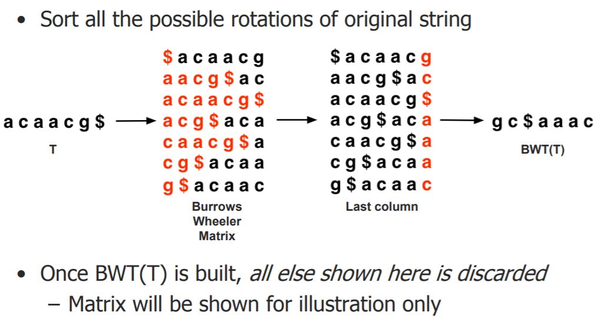
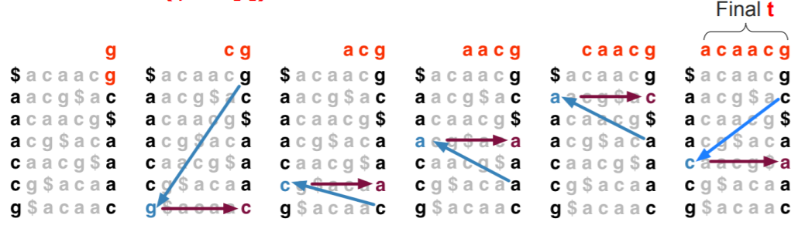
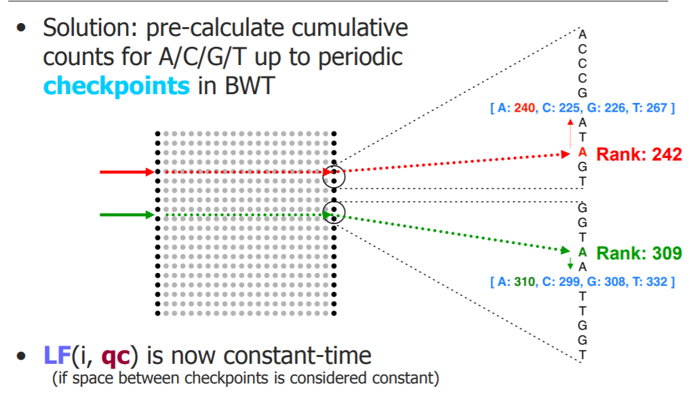
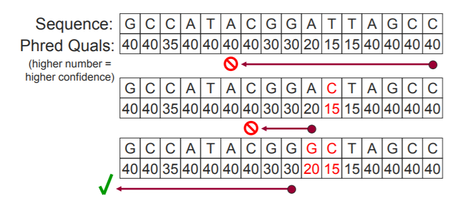

Short Read Alignment
我们如何将基因组转换为可以快速匹配数百万条reads的表示形式？
这里介绍一种方式，或说一种数据结构：Full-text Minute-size index (FM Index / BWT)
参考基因序列经过BWT变换后，通过FM Index和FL mapping能够实现reads的快速匹配。
- 给定参考基因和一组reads，至少能找到一个“良好”的局部比对，或说找到一个read在参考基因序列中的位置。
- 怎样的比对结果是“良好”的？
- 错配越少越好
- 低质量的碱基错配要比高质量的碱基错配更好
Burrows-Wheeler Transform(BWT)
The Burrows-Wheeler Transform(BWT) is a reversible representation with handy properties
Burrows–Wheeler Transform（简称BWT，也称作块排序压缩），是一个被应用在数据压缩技术（如bzip2）中的算法，该算法的输出因为有更多的重复字符而更容易被压缩。
- 按照字母序排序原始字符串的所有可能旋转（把前缀放到后缀后面，dollar符号代表结尾）。

文本出现在第一列和最后一列中具有相同的排序，就是对同一种字母来说，在第一列中出现该字母在这种字母中为第几个出现，在最后一列也在第几个出现。
The Last to First (LF) function matches character and rank.
Occ(qc) – Number of characters lexically smaller than qc in BWT(T)
Count(idx, qc) – Number of qc characters before position idx in BWT(T)
LF(idx, qc) = Occ(qc) + Count(odx,qc)
- 于是原来的序列在经过BWT变换后，只需要再知道occ和count就能通过最后一列复原原序列。
The Walk Left Algorithm inverts the BWT
1 | i = 0 |

read alignment
- 使用FM索引和BWT快速将reads与参考基因组对齐
一旦得到比对，如何确定其在参考基因中的位置？
- 幼稚的解决方案1：使用“向左走”回到文本的开头； 步数=命中偏移hit offset
这种方法线性时间，非常慢
- 天真的解决方案2：将整个后缀的位置以数组方式保留在内存中。 查找参考位置是在数组中查找。
这种方法占用存储空间太大，Suffix array is ~12 gigabytes for human – too big
- 混合解决方案：将上面两种方法结合起来，采样存储部分后缀位置； “向左走”直到下一个采样（“标记”）行
Bowtie marks every 32nd row by default (configurable)
如何确定count和rank？
就是上面描述的方法……
A Full-text Minute-size (FM) index makes LF constant time

FM index占用存储不大
Entire FM Index on DNA reference consists of:
— BWT (same size as T)
— Checkpoints (~15% size of T)
— Suffix array sample (~50% size of T)
- Total: ~1.65x the size of T
FM索引可以在较小的内存中快速找到精确的序列匹配项，但是short read alignment还需要考虑不匹配的因素，考虑碱基质量。
Bowtie’s solution: backtracking quality-aware search
当一段read没有在参考基因组中搜索到相应的比对序列，不要放弃，而是尝试“回溯”到先前的位置并尝试替换成其它碱基。为什么要回溯而不是改变前段序列或者当前不匹配的碱基呢？因为我们普遍认为一段read开头是准确的，越往后越不准确，所以更愿意让序列的前面部分完成匹配。
- PHRED score = -10log(p) p是错误的概率
- Bowtie backtracks to leftmost just-visited position with minimal quality，回溯到那个刚拜访过的的低质量的位置
这是一种贪婪算法，深度优先，不一定得到最优解，但是简单。
